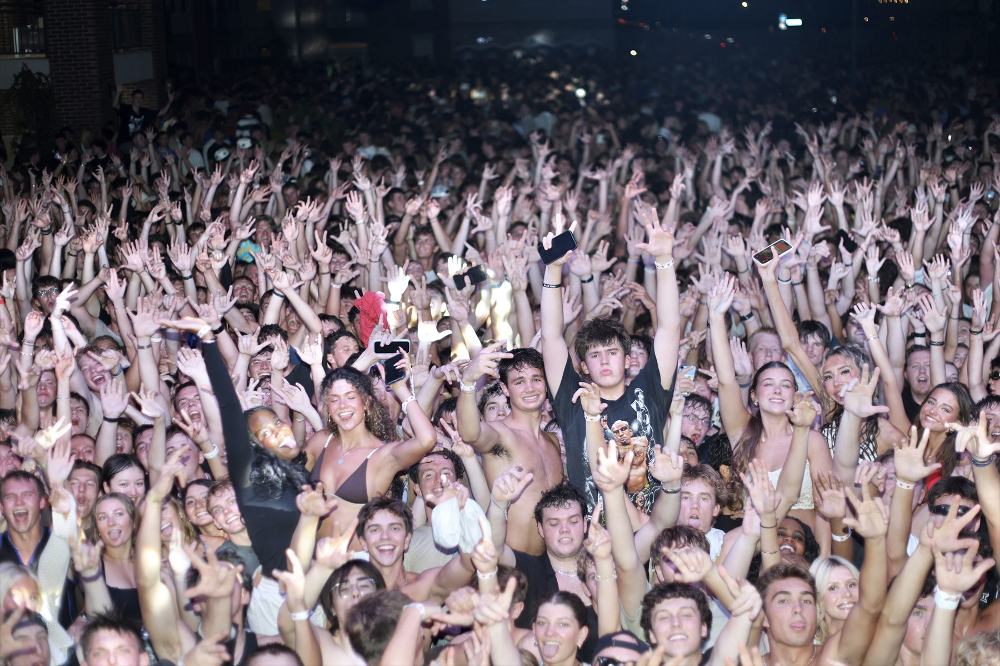
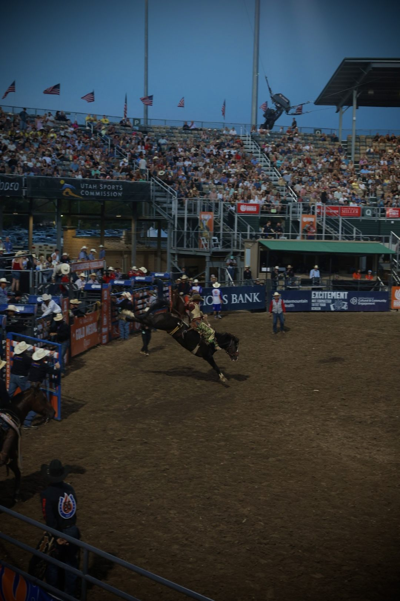
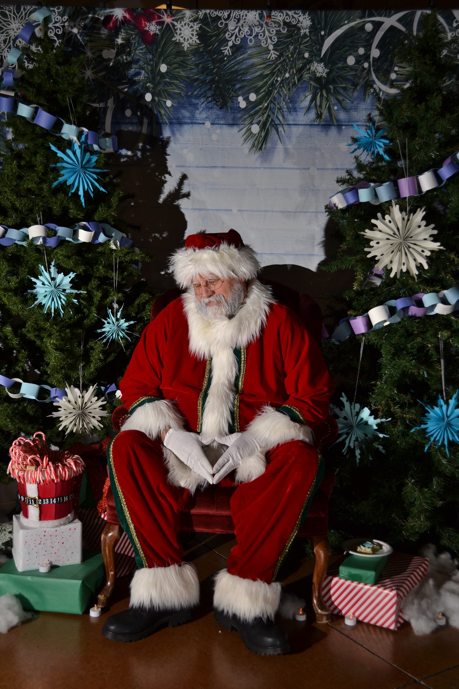

UTAH PHOTOGRAPHY
Event Photography in Utah
I’m Carson Dibb, a Utah photographer available to document gatherings and events. My portfolio includes community celebrations, private events, school activities, and rodeo photography.
Photos that bring an event back to life
Event photography is about more than the schedule—it’s the people, candid interactions, atmosphere, and details that make a gathering distinctive. I work to capture those moments while staying responsive to the pace and lighting of the event.
Share the event type, date, location, and the images you have in mind, and I’ll get back to you about availability and coverage.
Event photography examples


